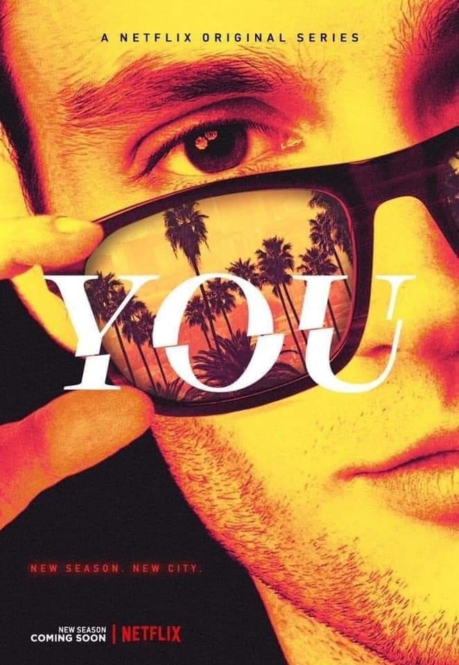
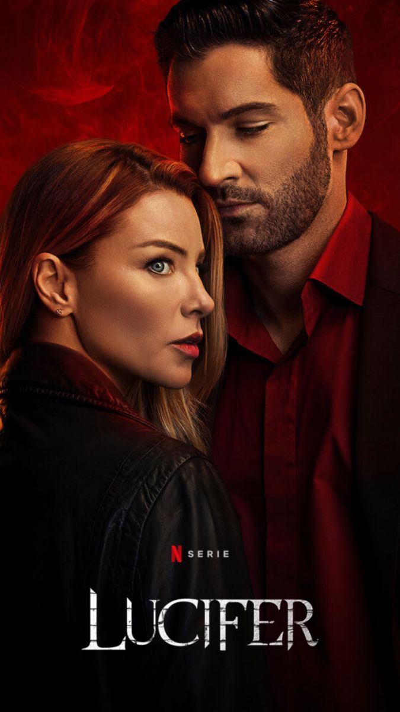
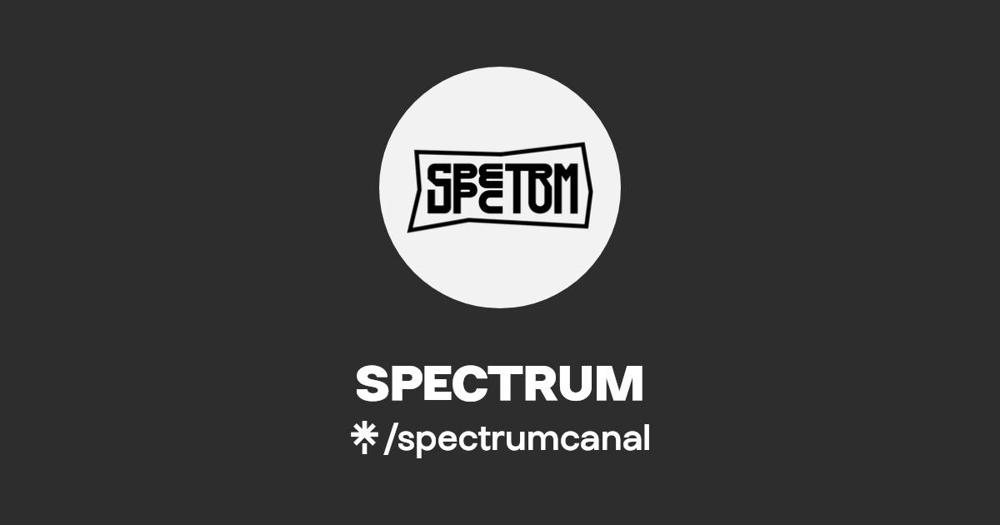
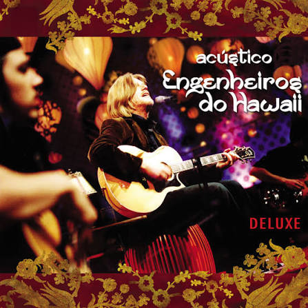
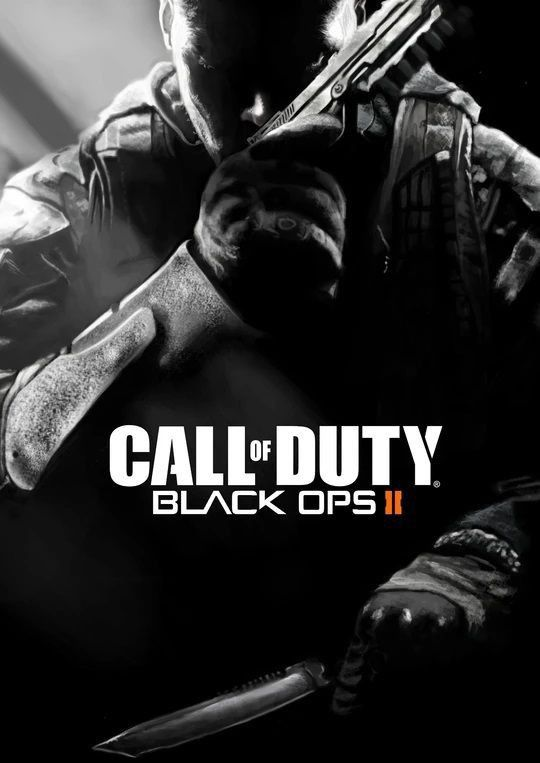
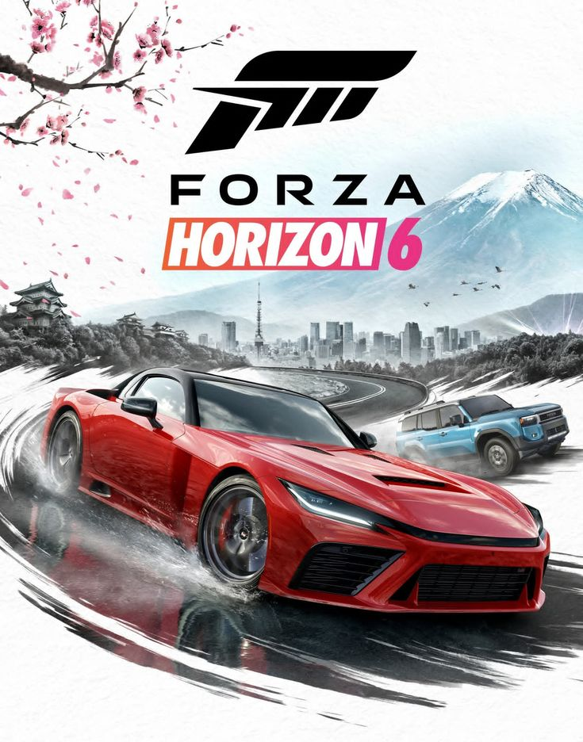
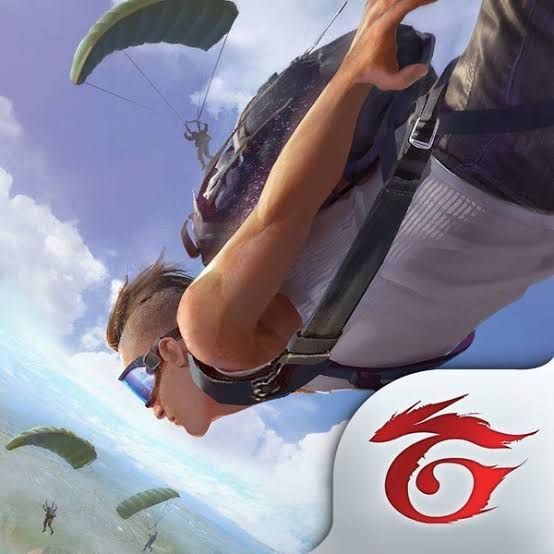

Filmes e Séries:

You (Você) Joe Goldberg é um homem aparentemente comum que desenvolve obsessões perigosas pelas pessoas por quem se apaixona. A série mistura romance, suspense e mistério, mostrando até onde alguém pode chegar para controlar a vida de outra pessoa.

Lucifer: Cansado de governar o inferno, Lucifer Morningstar decide viver em Los Angeles, onde passa a trabalhar como consultor da polícia. Entre investigações criminais, humor e elementos sobrenaturais, ele começa a questionar sua própria identidade e seus sentimentos.

A Torre Negra: Em um universo onde diferentes mundos estão conectados, o pistoleiro Roland Deschain busca proteger a Torre Negra, que mantém o equilíbrio de toda a existência. Para impedir sua destruição, ele enfrenta um poderoso inimigo em uma jornada cheia de ação e fantasia.
Música e Podcast:
Canal foco: Um canal voltado à apresentação de conteúdos em áudio e vídeo, permitindo acompanhar conversas, informações e diferentes assuntos.

Canal spectrum: Um espaço de conteúdo em formato de podcast, que pode explorar diferentes temas e perspectivas, proporcionando informação e entretenimento aos ouvintes.

Dom quixote: Uma música que utiliza a figura de Dom Quixote para abordar idealismo, sonhos e a vontade de lutar por aquilo em que se acredita, mesmo diante das dificuldades da realidade.
Games:

Call of Duty: Black Ops II – Modo Zumbis Um dos modos mais marcantes da franquia Call of Duty. Nele, os jogadores precisam sobreviver a ondas de zumbis, explorar mapas, conseguir armas e trabalhar em equipe. Uma experiência cheia de tensão, estratégia e diversão.

Forza Horizon 6: A franquia Forza Horizon é conhecida por suas corridas em mundo aberto, com carros variados, paisagens impressionantes e liberdade para explorar. O sexto título leva a experiência para o Japão, trazendo novos cenários e desafios para os fãs de velocidade.

Free fire: Um jogo de batalha real em que diversos jogadores disputam para ser o último sobrevivente. Com partidas rápidas, diferentes personagens, armas e estratégias, tornou-se um dos jogos mobile mais populares.